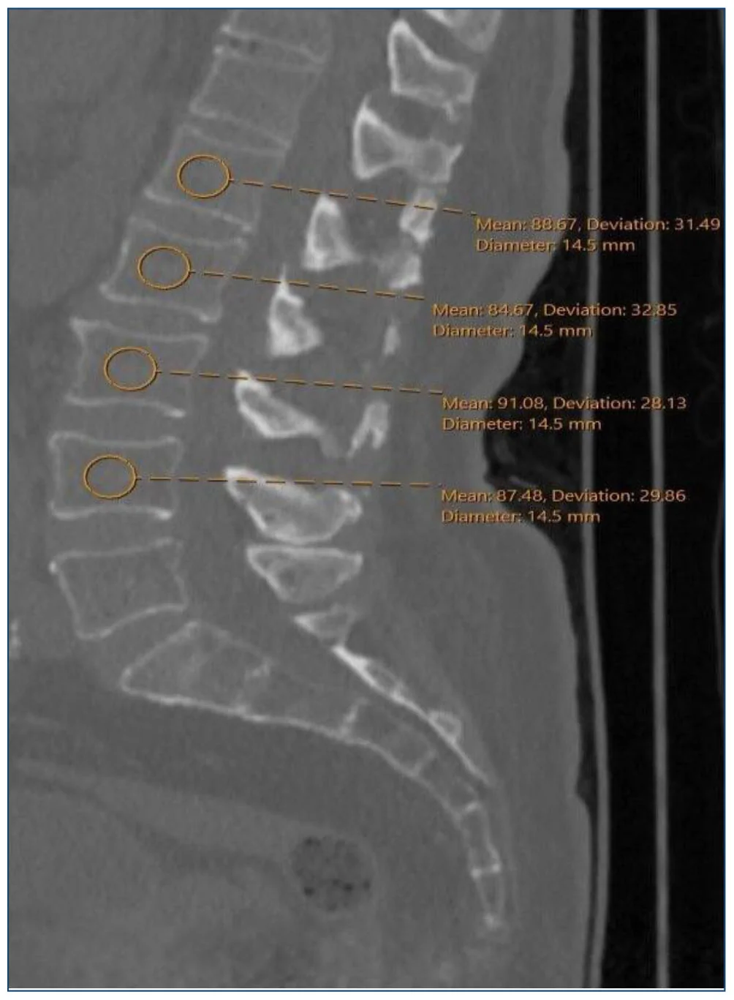
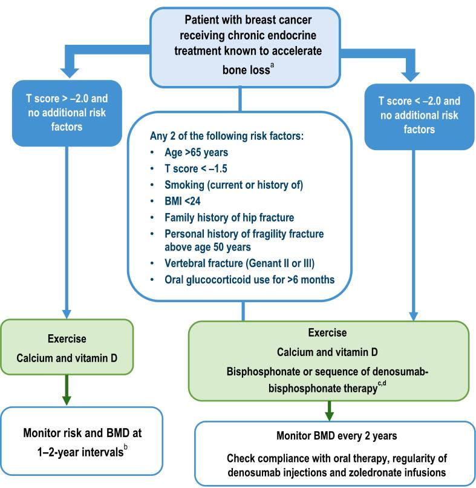
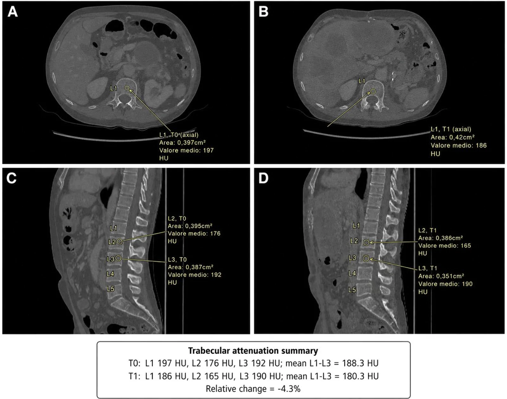

1679 — Loãng xương do điều trị ung thư (CTIBL): DXA, FRAX và "hút xương" trên CT
Tags: pattern:loang-xuong pattern:gay-xuong-suy-yeu vung:cot-song protocol:DXA protocol:FRAX score:FRAX
Mức chắc chắn (certainty): tổng hợp y văn — có đồng thuận chuyên khoa (AIBL) và loạt hồi cứu; không có thử nghiệm về việc "đo CT cơ hội có giảm gãy xương hay không".
1. Tổng quan — vì sao ung thư làm xương yếu, và vì sao hình ảnh phải "chủ động"
Cơ chế: nhiều điều trị ung thư tác động trực tiếp lên chuyển hóa xương:
- Ức chế aromatase (AI) ở ung thư vú: giảm estrogen → tăng hủy xương (tăng CTX, giảm BMD).
- Ức chế androgen (ADT) ở ung thư tiền liệt tuyến: giảm testosterone/estrogen → mất xương nhanh, tăng gãy.
- Hóa trị, corticoid, xạ trị, TKI — đều góp phần (PMC11384245).
TẠI SAO hình ảnh quan trọng: mất xương không triệu chứng cho tới khi gãy; gãy xương do suy yếu làm tăng tử vong và tàn tật ngay cả khi ung thư đã lui. Vì vậy phải đo trước – theo dõi – can thiệp, không chờ đau.
Số liệu nền:
| Bối cảnh | Thay đổi | Nguồn |
|---|---|---|
| ADT 12 tháng (40 nam) | Khối cơ −6,0%, mật độ cơ thắt lưng −7,8%, mỡ dưới da +11,6%, mỡ tạng +6,2%, hút xương đốt sống −4,4% (p = 0,006) | PMC13686873 |
| Đo HU trên CT bụng thường quy (350 ca) | Trung bình L1–L4: bình thường 149,0, thiếu xương 120,4, loãng xương 78,5 HU; L1 ≤ 95,5 HU: Se 84,6%, Sp 86,4%, AUC 0,913 | PMC13711640 |
| AI + loãng xương (121 ca) | Denosumab 60 mg/6 tháng vs alendronate 70 mg/tuần: đáp ứng 91,2% vs 82,8%; BMD tốt hơn và ít gãy lún hơn (p < 0,05) | PMC12613706 |
2. Mẫu hình: 3 nơi "thấy" xương yếu
- DXA (T-score) — chuẩn chẩn đoán loãng xương; nhưng không thấy thay đổi sớm trong 6–12 tháng.
- CT thường quy (cơ hội) — đo HU đốt sống trên CT bụng/ngực đã chụp vì lý do khác: không thêm liều, phát hiện sớm người chưa được DXA.
- Phim cột sống/ VFA — phát hiện gãy lún không triệu chứng (yếu tố nguy cơ mạnh nhất của gãy tiếp theo).
Hình thái cần mô tả trên CT: mật độ tủy xương giảm (HU thấp), đốt sống "ruột già" (giảm tín hiệu xương xốp, vỏ mỏng), lún đốt sống (mất chiều cao, bờ đốt sống gãy), thay đổi song song với teo cơ và tăng mỡ sau ADT.

3. Ma trận đối chiếu
| Phương thức | Đo gì | Chốt vào (gợi ý nguy cơ cao) | Chốt loại (không loại trừ) | Cạm bẫy |
|---|---|---|---|---|
| DXA | BMD (g/cm²), T-score tại cột sống/hông | T ≤ −2,5 = loãng xương; −1,0 đến −2,5 = thiếu xương | T bình thường vẫn có thể gãy nếu có gãy lún/nguy cơ lâm sàng | Thoái hóa, vôi hóa, gãy cũ làm T cao giả; đo sai vị trí |
| FRAX | Nguy cơ gãy 10 năm (có/không BMD) | Nguy cơ cao → điều trị dù T chưa tới ngưỡng | Không dùng FRAX cho người đã gãy lún hoặc đang dùng thuốc xương | FRAX không có yếu tố "ung thư/AI/ADT" — dễ đánh giá thấp |
| CT cơ hội (HU) | Mật độ tủy xương L1 (và L1–L4) | L1 ≤ 95,5 HU (Se 84,6/Sp 86,4); L1–L4 ≤ 95 HU | HU cao không loại trừ gãy do chất lượng xương/vi cấu trúc | Phải dùng CT không cản quang, cửa sổ mềm, ROI trong tủy; tránh đốt sống gãy/vôi hóa |
| X-quang/ VFA | Chiều cao đốt sống, bờ | Gãy lún ≥ 20% chiều cao = gãy lún | Không thấy gãy sớm | Bỏ sót gãy nhẹ; khó phân biệt gãy cũ/mới |
| MRI | Phù tủy (STIR), gãy cấp vs cũ | Phù tủy = gãy cấp; ngấm thuốc | Không dùng để chẩn đoán loãng xương | Nhầm gãy lành với di căn (xem bài 3017) |
4. Protocol & ngưỡng
Ai cần đánh giá xương (trước/trong điều trị):
- Nữ AI hậu mãn kinh; nam ADT; người dùng corticoid kéo dài, ức chế aromatase + hóa trị, tiền sử gãy lún.
- DXA nền + FRAX trước hoặc ngay khi bắt đầu; lặp 1–2 năm/lần (nhanh hơn nếu T thấp hoặc đang dùng thuốc).
- Đo HU trên mọi CT bụng/ngực không cản quang ở nhóm này — miễn phí liều.
Ngưỡng thực hành (theo đồng thuận AIBL và dữ liệu trên):
| Tình huống | Hành động |
|---|---|
| T ≤ −2,5 hoặc đã gãy lún | Điều trị bằng thuốc xương + canxi/vitamin D |
| −2,5 < T < −1,0 + nguy cơ cao (FRAX cao, corticoid, ADT/AI) | Cân nhắc thuốc; theo dõi 1–2 năm |
| L1 ≤ 95,5 HU trên CT | Chuyển DXA để xác nhận (không tự điều trị chỉ bằng HU) |
| Đang dùng denosumab | Không ngừng đột ngột (bùng phát mất xương/gãy lún) — cần liều cuối + thuốc nối |
| Trước nhổ răng/ phẫu thuật hàm | Đánh giá nguy cơ MRONJ; hoãn nếu có thể (bài 6108) |
So sánh thuốc (dữ liệu AI + loãng xương):
- Denosumab 60 mg SC mỗi 6 tháng: BMD tăng nhiều hơn, ít gãy lún hơn alendronate (p < 0,05), đáp ứng 91,2% vs 82,8% (PMC12613706).
- Alendronate 70 mg/tuần: rẻ, uống; cần tuân thủ (đứng 30 phút, uống nước).
- Zoledronic acid 4 mg IV/năm: lựa chọn khi không dung nạp đường uống; lưu ý MRONJ.
flowchart TD
A[Bắt đầu AI/ADT/corticoid] --> B[DXA nền + FRAX]
A --> C[CT bụng/ngực không cản quang: đo HU L1]
B --> D{T <= -2,5 hoặc đã gãy lún?}
C --> E{L1 <= 95,5 HU?}
E -- Có --> B
D -- Có --> F[Điều trị: denosumab/zoledronate/alendronate + Ca/VitD]
D -- Không --> G{T thấp + nguy cơ cao?}
G -- Có --> F
G -- Không --> H[Theo dõi DXA 1-2 năm + VFA]
F --> I[Theo dõi BMD 1-2 năm, đánh giá MRONJ trước nha khoa]
5. Biến thể & cạm bẫy
- DXA ở cột sống bị thoái hóa/vôi hóa → T cao giả; nên đọc hông hoặc chọn đốt sống ít tổn thương.
- CT có cản quang không dùng để đo HU xương (thuốc làm tăng HU) — chỉ dùng không cản quang.
- Đốt sống đã gãy/vôi hóa làm HU cao; đo nhiều đốt và tránh đốt bất thường.
- FRAX không có AI/ADT → đừng "yên tâm" khi FRAX thấp ở bệnh nhân đang ADT.
- Gãy lún không triệu chứng thường bị bỏ qua trên CT; phải đo chiều cao đốt sống khi đọc.
- Denosumab ngừng đột ngột gây gãy lún dồn dập — luôn có kế hoạch nối thuốc.
- MRONJ: nguy cơ thấp (< 1%) nhưng không bằng 0 ở liều thấp (PMC12615393); khám răng miệng trước khi bắt đầu.
- Teo cơ – tăng mỡ sau ADT đi kèm mất xương (SMI −6%, mỡ tạng +6,2%) — đừng chỉ nhìn BMI.


6. Tự lượng giá
Câu 1. Nam 70 tuổi bắt đầu ADT, CT bụng không cản quang vì lý do khác: L1 = 88 HU. Xử trí?
Đáp án
Chuyển DXA (L1 ≤ 95,5 HU gợi ý loãng xương, Se 84,6/Sp 86,4 nhưng không phải chẩn đoán). Kết hợp FRAX và đánh giá gãy lún; nếu T ≤ −2,5 hoặc có gãy lún → điều trị. Không tự điều trị chỉ dựa vào HU.
Câu 2. Nữ 62 tuổi dùng AI, DXA cột sống T = −1,8, hông T = −2,6. Kết luận?
Đáp án
Loãng xương (lấy giá trị thấp nhất — hông T ≤ −2,5). Cột sống có thể bị thoái hóa làm T cao giả. Điều trị + canxi/vitamin D; theo dõi BMD.
Câu 3. Bệnh nhân đang denosumab 60 mg/6 tháng, muốn ngừng vì "đỡ rồi". Tư vấn?
Đáp án
Không ngừng đột ngột — nguy cơ bùng phát mất xương và gãy lún dồn dập. Cần kế hoạch: liều cuối + thuốc nối (bisphosphonate) và theo dõi DXA; quyết định bởi bác sĩ chuyên khoa xương.
Bài liên quan chéo
- 3017 — Gãy nén đốt sống do loãng xương — vertebroplasty: xử trí cấp khi đã có gãy lún.
- 1650 — Gãy xương sườn và xương đòn sau xạ trị: gãy do xạ, cần phân biệt với gãy suy yếu.
- 1639 — Đau xương do di căn — chọn xạ trị hay SBRT: kiểm soát đau, không nhầm đau di căn với gãy suy yếu.
Không dùng để chẩn đoán độc lập khi chưa có người hướng dẫn. Ngưỡng HU/điều trị thay đổi theo hướng dẫn địa phương; bài không thay thế tư vấn chuyên khoa xương–nội tiết.